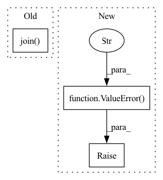

Pattern ID :9519
Before Change
url, cache_dir=local_path, **download_kwargs
)
os.rename(os.path.join( local_path, fetched_file) , local_abs_path)
return local_abs_path
After Change
import huggingface_hub
except ImportError:
// Extra tools pattern:
raise ValueError(
f"Interpreted {source} as Huggingface hub ID, but Huggingface-hub"
"is not installed. Please install with pip install huggingface-hub"
)
url = huggingface_hub.hf_hub_url(source, filename)
fetched_file = huggingface_hub.cached_download(url, cache_dir=savedir)
// Huggingface hub downloads to etag filename, symlink to the expected one:
sourcepath = pathlib.Path(fetched_file).absolute()In pattern: SUPERPATTERN
Frequency: 4
Non-data size: 3
Instances Fragment ID: 33960182
Project Name: speechbrain/speechbrain
Commit Name: bddc7b68453731ac3cac39e3dc8e33b6e447f8f2
Time: 2021-02-26
Author: aku.rouhe@aalto.fi
File Name: speechbrain/pretrained/fetching.py
M Class Name: AnonimousClass
N Class Name: AnonimousClass
M Method Name: fetch(3)
N Method Name: fetch(3)
M Parent Class:
N Parent Class:
M File Name: speechbrain/pretrained/fetching.py
N File Name: speechbrain/pretrained/fetching.py
M Start Line: 25
M End Line: 56
N Start Line: 10
N End Line: 79
Before Change
if self.languages and set(translation_dict) - lang_set:
raise ValueError(
"Some languages in example ({0}) are not in valid set ({1}).".format(
", ".join( sorted(set(translation_dict) - lang_set)) , ", ".join(lang_set)
)
)
After Change
def encode_example(self, translation_dict):
lang_set = set(self.languages)
if self.languages and set(translation_dict) - lang_set:
raise ValueError(
f"Some languages in example ({", ".join(sorted(set(translation_dict) - lang_set))}) are not in valid set ({", ".join(lang_set)})."
)
// Convert dictionary into tuples, splitting out cases where there are
// multiple translations for a single language.
translation_tuples = [] Fragment ID: 33960191
Project Name: huggingface/datasets
Commit Name: 3edbeb0ec6519b79f1119adc251a1a6b379a2c12
Time: 2021-11-17
Author: 56029953+Mehdi2402@users.noreply.github.com
File Name: src/datasets/features/translation.py
M Class Name: TranslationVariableLanguages
N Class Name: TranslationVariableLanguages
M Method Name: encode_example(2)
N Method Name: encode_example(2)
M Parent Class:
N Parent Class:
M File Name: src/datasets/features/translation.py
N File Name: src/datasets/features/translation.py
M Start Line: 97
M End Line: 103
N Start Line: 99
N End Line: 101
Before Change
options = ["center", "uniform", "normal"]
if self.init_domain["type"] not in options:
raise ValueError("method %s not recognized. Options are : %s "
% (self.init_domain["type"], " ".join( options) ))
if self.init_domain["type"] == options[0]:
self.pos = torch.zeros((self.nwalkers, self.nelec*self.ndim))After Change
self.pos = self._init_multivar()
else:
raise ValueError("Init walkers not recognized" )
def _init_uniform(self):
pos = torch.rand(self.nwalkers, self.nelec*self.ndim)
pos *= (self.init_domain["max"] - self.init_domain["min"]) Fragment ID: 33960189
Project Name: nlesc-jcer/qmctorch
Commit Name: 9fa6ebc04542784d6b31a66f43e23fe01de6da77
Time: 2019-12-11
Author: nicolas.gm.renaud@gmail.com
File Name: deepqmc/sampler/walkers.py
M Class Name: Walkers
N Class Name: Walkers
M Method Name: initialize(2)
N Method Name: initialize(2)
M Parent Class: object
N Parent Class: object
M File Name: deepqmc/sampler/walkers.py
N File Name: deepqmc/sampler/walkers.py
M Start Line: 37
M End Line: 48
N Start Line: 37
N End Line: 47
Before Change
else:
data_name = fuzzy_search(benchmark, self.all_datasets)
data_path = os.path.join(self.benchmark_path, data_name)
test = pd.read_csv(os.path.join( data_path, "test.csv") )
y = test.Y.values
exec("evaluator = Evaluator(name = " + metric_dict[data_name] + ")")
return {metric_dict[data_name]: evaluator(y, pred)}After Change
else:
// validation set evaluation
if benchmark is None:
raise ValueError("Please specify the benchmark name for us to retrieve the standard metric!" )
data_name = fuzzy_search(benchmark, self.dataset_names)
metric_dict = bm_metric_names[self.name]
evaluator = eval("Evaluator(name = \"" + metric_dict[data_name] + "\")")
return {metric_dict[data_name]: evaluator(true, pred)} Fragment ID: 33960184
Project Name: mims-harvard/tdc
Commit Name: 240bce2c78e07c54a64e64d115babf7e68f9a4dd
Time: 2020-12-19
Author: kexinhuang@hsph.harvard.edu
File Name: tdc/benchmark.py
M Class Name: BenchmarkGroup
N Class Name: BenchmarkGroup
M Method Name: evaluate(4)
N Method Name: evaluate(4)
M Parent Class:
N Parent Class:
M File Name: tdc/benchmark.py
N File Name: tdc/benchmark.py
M Start Line: 118
M End Line: 134
N Start Line: 96
N End Line: 115